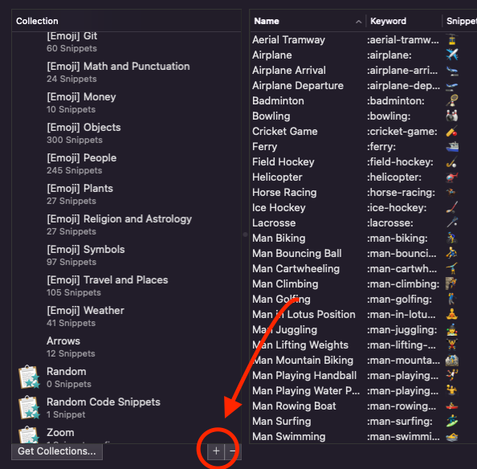
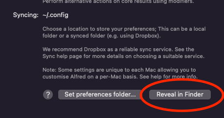

How to capture code snippets from Obsidian and add to Alfred Snippets
At work, I'm often looking through my Obsidian notes looking for a certain code snippet to run to update a build version, deploy my server, or some other mundane task I can't be bothered to memorize. And it's nice having obsidian because then not only do I have a home for these little snippets of code, but I can also provide some notes on the snippets, like what it does, why it's written a certain way, what to try if it fails, etc. Sometimes I need this context, but a lot of the times I just need the snippet of code.
Instead of having to take all these snippets, scrub through them to find what's important, and manually add to Alfred, I thought I could do it in an automated fashion. It seemed like a good opportunity to use awk, even though I didn't really understand how it was used. All I knew is that awk is good for parsing through files in a stream, and really that was all I needed to know.
I just had to come up with a way to identify the files I wanted to include as snippets with as little work as possible, and that is where my little scripts name comes from! Introducing sniper, the handy-dandy tool for cloning your obsidian code blocks in Alfred snippets. All you have to do is prefix a code block with the Sniper keyword "snipe" in a markdown comment. This isn't a "smart" utility, so you got to make sure the comment only contains the word "snipe", and nothing else. Here's an example:
# Some Markdown file.md
%%snipe%%
````python
print ('hello world!')
````
To get your flagged snippets to appear in alfred, you will first want to create a new snippets group. Open up "Settings -> Features -> Snippets -> Collections" and click the little "+" button. Then type in the name of the collection. I named mine "Random Code Snippets", but you can name it whatever you want, just make sure to update the bash script variable $ALFRED_SNIPPETS_DIR so it matches your collection.

You also need to update $ALFRED_SNIPPETS_DIR so it know where your Alfred config directory is. You can find where your alfred preferences file is by going to "Settings -> Advanced -> Syncing". I keep mine in .config with the rest of my dotfiles

My directory path looks like:
ALFRED_SNIPPETS_DIR="$HOME/.config/Alfred.alfredpreferences/snippets/Random Code Snippets"
The Code
OK, so with the basic setup figured out, you just need this snippet of code (snippets all the way down)!
#!/bin/bash
# Script for swiping snippets (sniping) from obsidian into alfred
ALFRED_SNIPPETS_DIR="$HOME/.config/Alfred.alfredpreferences/snippets/Random Code Snippets"
snipe () {
MARKDOWN_FILE=$(echo $0 | cut -c3-)
FILENAME=$(basename "$0")
UUID=$(uuidgen)
SNIPPET_FILENAME="$1/$FILENAME [$UUID].json"
SNIPPET=$(awk 'BEGIN { start=0 } /%%snipe%%/ { start=1; next } start && /^```/ { code=1; start=0; next } code && /^```/ { code=0; next } code { printf "%s\\n", $0 } END { }' "$MARKDOWN_FILE")
if [ -z "$SNIPPET" ]; then
return 1
fi
touch "$SNIPPET_FILENAME"
ENCODED_SNIPPET="${SNIPPET//\"/\\\"}" # Replace " with \"
printf "{\n" >> $SNIPPET_FILENAME
printf "\"alfredsnippet\" : {\n" >> $SNIPPET_FILENAME
printf "\"snippet\" : \"%s\",\n" "$ENCODED_SNIPPET" >> $SNIPPET_FILENAME
printf "\"uid\" : \"%s\",\n" $UUID >> $SNIPPET_FILENAME
printf "\"name\" : \"%s\",\n" "$FILENAME" >> $SNIPPET_FILENAME
printf "\"keyword\" : \"\"\n" >> $SNIPPET_FILENAME
printf "}}\n" >> $SNIPPET_FILENAME
}
# Clear out anything already in directory
rm "$ALFRED_SNIPPETS_DIR/"*.json
FUNCDEFS=$(typeset -f snipe) find . -name "*.md" -type f -exec sh -c '
eval "$FUNCDEFS" &&
unset -v FUNCDEFS &&
snipe "$@"' {} "$ALFRED_SNIPPETS_DIR" \;
I added this to a directory on my path ~/bin so I can easily execute it. To use it:
- Navigate to your Obsidian vault directory
- Run the script (e.g.
sniper) without any arguments - That's all. Note that this erases anything already in the snippets collection, which is why I encourage you to create a new one.
- Sometimes, I've noticed the snippets don't update immediately, so I had to clear Alfred's cache (Settings -> Advanced -> Clear Application Cache)
Notes
- Yeah, this could probably be done with an Obsidian or Alfred extension, but this is one of the simplest possible options for me, and I like knowing what's going on.
- This is not so much a tutorial, but if you have questions, let me know. ChatGPT helped me a lot with the scripting, but I learned a lot too.
- I encourage you to take a look at this and play around with it. There are some limitations, like only allowing one snippet per file. The filename is also used as the snippet name, so if the file name doesn't really correspond with the snippet, that might be confusing. But hey if you keep atomic notes (which I totally definitely do (not)), it shouldn't be an issue.
That's all for now. Happy hacking :P